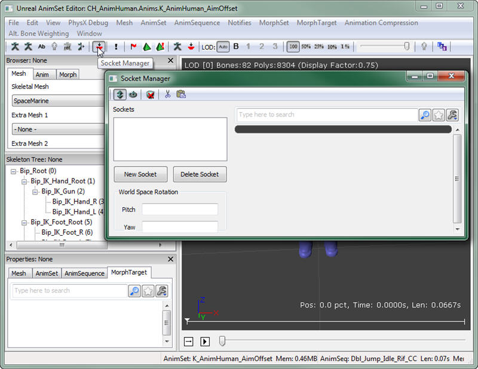
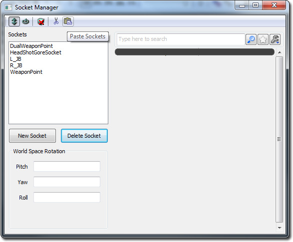

UDN
Search public documentation:
UDKCustomCharactersCH
English Translation
日本語訳
한국어
Interested in the Unreal Engine?
Visit the Unreal Technology site.
Looking for jobs and company info?
Check out the Epic games site.
Questions about support via UDN?
Contact the UDN Staff
日本語訳
한국어
Interested in the Unreal Engine?
Visit the Unreal Technology site.
Looking for jobs and company info?
Check out the Epic games site.
Questions about support via UDN?
Contact the UDN Staff
为 UDK 创建自定义角色
概述
骨架
- UT3_Male.max (3D Studio Max 9)
- UT3_Male.max (3D Studio Max 9)
- UT3_Krall.max (3D Studio Max 9)
- UT3_Corrupt.max (3D Studio Max 2009)
Mesh（网格物体）加权为 Skeleton（骨架）
创建一个自定义网格物体时，最好是根据心里构想的骨架雏形创建网格物体。网格物体应该根据所有与骨架已经定义的位置相对应的关节建立模型。对于不遵守这个规则的网格物体，可以旋转骨架关节，使它们可以满足网格物体中关节的要求。游戏中的动画会将骨骼调整恢复到它们需要放置的地方，这样才能正常播放。虽然可以旋转骨骼，但是决不应该平移或挪动它们，尝试将它们放置在网格物体中关节所在位置。因为动画会定义骨骼平移的位置，所以这样做会在游戏中造成意想不到的结果，还会挤压或拉伸网格物体。例如，如果一个网格物体的腿比骨架定义的长度短，然后移动骨架的腿骨骼来补足短的那部分，那么在游戏中为了与其他角色的腿的长度相一致会将腿拉伸得更长。这样可以保证在游戏中角色设置过程中的所有部分连接正确。组装网格物体的正确方法是，根据需要旋转关节使它们在必要的时候尽量闭合和/或修改网格物体进行组装。使用不同比例创建角色将需要一个新的靠模骨架，而且如果该比例与已经存在的角色差距很大，它们可能还需要拥有它们自己的动画，这些已经超出了本文档的范围。 以下面的网格物体为例。已经使用心里构想的男性骨架对其进行建模。所有主要的关节和身体部分都完全满足骨架的要求，所以不需要进行大量调节。到了对网格物体加权使其成为骨架的时候，就会异常简单。 在 UT3_Male.max 文件中合并骨骼，删除不需要的骨骼，然后对网格加权使其成为骨架。在本案例中，网格物体没有额外部分或可能会需要额外骨骼的‘飞扬的碎片’，所以骨架上只剩下下光秃秃的必需部分可以进行加权。
导出步骤
导入步骤
[YourUDKInstallationDirectory]\UDKGame\Content\Characters
向网格物体添加 Sockets（插槽）

通过选择 New Socket（新建插槽）创建的 Sockets，选择会装备该插槽的骨骼，然后为插槽创建一个名称。 为了使自定义角色可以使用当前代码库，UDK 随附的 UTGame 角色具有所需的特定插槽。如果您希望可以放弃您自己的角色并使它们在没有任何额外编码的情况下正常运行，那么您的网格物体至少需要具有以下插槽：| 插槽名称 | 骨骼名称 |
| WeaponPoint | b_RightWeapon |
| DualWeaponPoint | b_LeftWeapon |
| L_JB | b_LeftAnkle |
| R_JB | b_RightAnkle |
| HeadShotGoreSocket | b_Neck |
 在这里可以找到更多有关插槽的信息。
在这里可以找到更多有关插槽的信息。
从现有 UDK 角色中快速复制插槽
如果您将您的骨架网格物体中同一个骨架绑定作为存储在包中中的其他现有骨架网格物体使用，您可以快速复制插槽，不需要重新创建它们。例如，打开存储为 CH_LIAM_Cathode.Mesh.SK_CH_LIAM_Cathode 的骨架网格物体。打开 Socket Manager（插槽管理器），然后点击 Copy Sockets（复制插槽）按钮。 接下来打开您的骨架网格物体。打开 Socket Manager（插槽管理器），然后点击 Paste Sockets（粘贴插槽），这样就完成了操作！
接下来打开您的骨架网格物体。打开 Socket Manager（插槽管理器），然后点击 Paste Sockets（粘贴插槽），这样就完成了操作！

创建您的角色供游戏中使用
UTFamilyInfo 子类
UTFamilyInfo 类基本上是一个属性的容器，它允许您指定用于粒子角色或角色的群组的网格物体、物理资源、动画集、材质、血肉快等等。不过，这个类确实还包含一些其他功能，由于该文档的原因，可以简单地将其看作是设置某些属性的地方，设置好这些属性才可以将您的角色放入 UDK 中。
在本示例中，我们将会一直创建一个单独的子类并只将其用于一个角色。理论上，您可以创建这些类的层次结构，其中一个类是由 UTFamilyInfo 而来的子类并会定义所有共享共同属性的角色群组的基本属性。例如，从他们的外观角度而言，一个角色群组可能共享一个共同的主题。可以认为这些角色是相同派系的一部分。然后您可以创建这个新类的多个子类。每个子类可以代表这个派系中的特定角色，而且它们甚至会指定他们在该派系中所属的家族，进一步对您的角色进行分类。
在进行下一步操作之前，您首先需要为您的角色创建一个该类的新子类。
Class UTFamilyInfo_SpaceMarine extends UTFamilyInfo
abstract;
defaultproperties
{
}
CharacterMesh=SkeletalMesh'UDNCharacters.SpaceMarine'
- Faction – 这个角色或角色的群组所属的整个群组的名称。
- FamilyID – 这个角色所属的家族的名称。
- CharacterTeamBodyMaterials – 这是作为团队游戏中角色的身体材质使用的材质的数组。0 索引代表红色，1 索引代表蓝色。
- CharacterTeamHeadMaterials - 这是作为团队游戏中角色的头材质使用的材质的数组。0 索引代表红色，1 索引代表蓝色。
- PhysicsAsset – 这是对为您的角色骨架网格物体创建的物理资源的引用。
- AnimSets – 这是供您的角色使用的动画集的数组。
- ArmMeshPackageName – 包含该角色第一人称装备网格物体的包的名称。
- ArmMesh – 这是对该角色的第一人称手臂的引用
- ArmSkinPackageName – 包含第一人称手臂网格物体的材质的包的名称。
- RedArmMaterial – 这是对第一人称手臂网格物体的红色团队材质的引用。
- BlueArmMaterial - 这是对第一人称手臂网格物体的蓝色团队材质的引用。
[YourUDKInstallationDirectory]/Development/Src/UTGame/Classes
UTPlayerReplicationInfo 类
现在，您需要告诉 UDK 使用该新类而不是当前的默认类。这可以在 UTPlayerReplicationInfo.uc 文件的默认属性块中进行设置。最后一行目前应该这样写：CharClassInfo=class'UTGame.UTFamilyInfo_Liandri_Male'
UTFamilyInfo 类。在该示例中，现在这行代码将会如下所示：
CharClassInfo=class'UTGame.UTFamilyInfo_SpaceMarine'